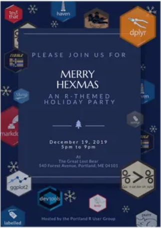
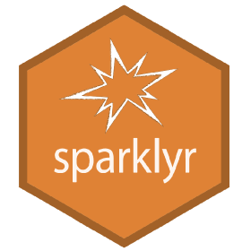

MaineR Users Group
About
Call for Presentations
Events
MaineR Users Group
Categories
All
(24)
blogdown
(1)
data-viz
(1)
docker
(1)
etl
(1)
hack-a-thon
(1)
markdown
(1)
modeling
(1)
news
(1)
ocr
(1)
panel
(1)
plumber
(1)
purrr
(1)
python
(1)
quosures
(1)
rvest
(1)
simulation
(1)
social
(6)
sparklyr
(1)
text-mining
(2)
tidyverse
(1)
Data Mining Methods for Improving Health Outcomes
social
James Quinlan Ph.D., associate professor of mathematics and data science at the University…
Mar 30, 2023
Donald S.
Donald Szlosek, the organizer of MaineR, interviewed by the R Consortium and Linux Foundation
social
Donald Szlosek, the MaineR User Group organizer, recently highlighted the significant growth and impact of the R community in Maine to the R Consortium. Donald emphasizes…
Mar 28, 2023
Donald S.
January Data on Tap - MaineR Users Group Social Hour
social
With the hopes of becoming a state-wide user group, we have renamed to the MaineR Users Group!
Jan 26, 2023
Donald S.
It’s 2023 and we’re Back!
news
Hello, World!
Jan 14, 2023
Donald Szlosek
Exploring nature through {rvest}
text-mining
rvest
Are cell biologists the most long-winded academics? How curt are physicists when describing their own research? This…
Nov 4, 2021
Adam B.
Panel: A conversation with Scott Valcourt and Mark Wagy
panel
This meetup will be an open panel discussion with Mark Wagy and Scott Valcourt on startups, data science, networks and the science of learning.
Oct 7, 2021
Umesh H. Adam B.
Text Mining with R: Extracting insights from user-generated content
text-mining
In this presentation, text mining methods and code in the R-programming language applied in two class projects will be presented. For one project, product…
Sep 2, 2021
Umesh H.
R in Finance: Monte Carlo Model for Pricing European Options
simulation
On August 5th, Philip Munyua, PhD, will be presenting “R in Finance: Monte Carlo Model for Pricing European Options” at our monthly”Analytics Open Mic Night” at Roux campus.
Aug 5, 2021
Umesh H. & Adam B.
July Analytics Open Mic Night
social
In partnership with the Roux Institute in Portland we are starting a new series of meetups around data science and engineering. We hope this meetup will have some…
Jul 1, 2021
Umesh H.
June Analytics Open Mic Night
social
In partnership with the Roux Institute in Portland we are starting a new series of meetups around data science and engineering. We hope this meetup will have some…
Jun 17, 2021
Umesh H.
Turning your R code into a blog post
blogdown
If you are interested in embedding R…
Jan 13, 2021
Adam B. Frank B.
Testing an API wrapper with Plumber
plumber
It’s about time we get the group going again. I’ll get us started by talking about a recent challenge I had - how to write reproducible tests for an…
Nov 19, 2020
Adam B.
R Hack-a-thon
hack-a-thon
Greetings R users!
Starting out 2020 we would like to host an R hack-a-thon. Bring your…
Mar 5, 2020
Adam B.

Merry Hexmas: A holiday paRty
social
We’ll be gathering at the Great Lost Bear for an informal holiday paRty.…
Dec 19, 2019
David D. & Jaclyn J.
Ecosystem modeling with presence-only data in R
modeling
Dr. Nick Record and Ben Tupper will share some of the modeling and forecasting work they have done using citizen observations and quasi-public…
Nov 6, 2019
David D.
The ETL Machine: An approach to ETL in R, Part 1 - Writing good functions
etl
There are lots of good reasons to avoid using R for ETL. But that doesn’t mean one shouldn’t try. Sometimes business constraints and lack of adequate tools make ETL…
Sep 26, 2019
David D.
Visualizing Socioeconomic Status in the United States
data-viz
Frank Boscoe, Ph.D., recently retired from the New York State Department of Health and moved to Portland to start a consulting company, Pumphandle LLC, where…
Jun 20, 2019
David D.
Optical character recognition using Tesseract
ocr
Donald Szlosek, Biostatistician at IDEXX, will do a demonstration of optical character recognition in R. Optical character recognition is a process through which images of…
May 2, 2019
David D.

Analyzing Large Datasets in R or: How I Learned to Stop Worrying and Love Spark
sparklyr
The analysis of large datasets in R can be difficult. Available RAM limits the amount of data that can be efficiently loaded and processed in a typical R session.…
Mar 7, 2019
David D.
A modern reporting toolchain: RMarkdown with containers
docker
markdown
We’ve got good tools for collaborating on code. Wouldn’t it be nice if we could collaborate on prose in similar ways?…
Jan 24, 2019
Zhenning X.
R + Python: A Love Story
python
Adam Rosenblit, Data Scientist at Vets First Choice, and David Denton, BI Engineer at CashStar, will be co-hosting this Meetup, which aims to demonstrate how R and Python…
Dec 6, 2018
David D. & Adam R.
Dplyr and the Tidyverse: A crash course
tidyverse
David Denton, BI engineer at CashStar, will be taking the group on a deep dive into the world of data…
Oct 25, 2018
David D.
Inaugural meetup for the Greater Portland useR Group
purrr
quosures
Adam Black, Research Analyst at Maine Medical Center, will be presenting a talk on some advanced R programming concepts.
Sep 20, 2018
Adam B.
Frequent Symptom Mining
Invalid Date
James Quinlan, Ph.D.
No matching items